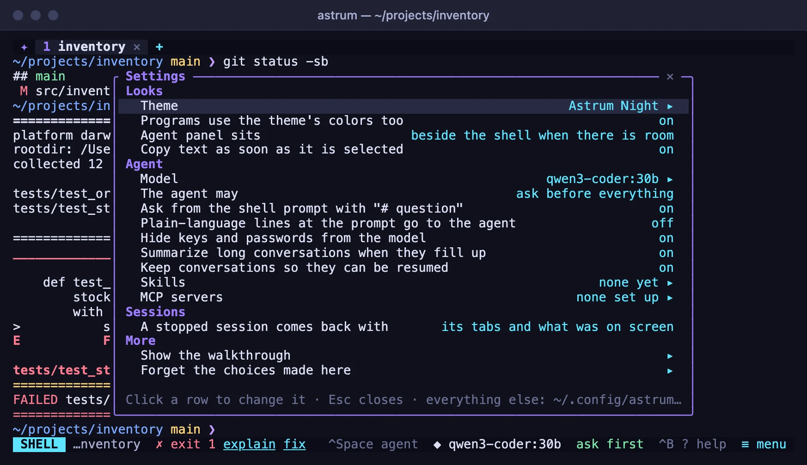
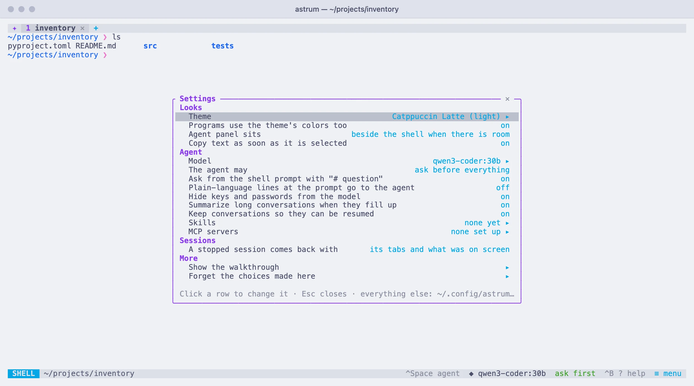

Settings
Where Astrum keeps its settings, the settings screen, and every setting in the config file with its default.
Where the config file is
Astrum's settings are in one file, config.toml. To see where it is:
astrum configIt is ~/.config/astrum/config.toml, or $XDG_CONFIG_HOME/astrum/config.toml when XDG_CONFIG_HOME is set. ASTRUM_CONFIG_DIR names another folder for it altogether. If there is no file yet, the command says so. To write a commented starter file there:
astrum config --init--init leaves a file that is already there alone. In the agent panel, /config also says where the file is, and writes the starter file if there is none.
Every setting is optional. One that is not in the file has its default, so the file needs only the lines you want to change. The file is TOML: the settings at the top level come before the first line in square brackets, because a line written below [agent] belongs to [agent]. The whole starter file is at the end of this page.
Changes take effect when you save
A running session reads the file again as soon as it is saved, and says Settings reloaded from the config file. Nothing needs restarting, with three exceptions:
scrollbackandshellapply to shells started afterwards.truecolorapplies to terminals that attach afterwards: detach (≡ menu→ Detach) and runastrumagain.- A key held in an environment variable reaches a running session with
astrum reload, run in the shell that has it. See Providers and models.
If the file cannot be used as it is (a missing quote, a value that is not one of the choices, an MCP server written wrongly), Astrum says Config problem, nothing was changed with the reason, and the session carries on with what it had. A session that starts with a file it cannot read uses the defaults in place of everything the file says, and says Config problem with the reason. A smaller problem, such as a color that is not a color or a key that is not a key, leaves the rest of the file to take effect and is reported as Settings reloaded. Config problem: and what it is.
A setting whose name Astrum does not know is passed over without a word, so a misspelled one, or one written under the wrong table, has no effect at all. astrum keys prints what is wrong with the file as a whole and with its [keys], after its list of keys; astrum themes does the same for a theme of your own.
Choices made inside Astrum
What you choose inside Astrum, on the settings screen, with /model and /theme, or by stepping through the autonomy levels, is written to state.toml, next to the config file. Astrum never rewrites config.toml itself.
A choice in state.toml takes the place of the config file's value for that one setting. So once you have chosen a theme with /theme, changing theme in the config file makes no difference until that choice is forgotten. Forget the choices made here, the last row of the settings screen, empties state.toml (apart from the walkthrough having been seen) and hands every setting back to the config file.
What state.toml can hold: the theme and theme_light, theme_terminal, agent_panel, copy_on_select, restore, the model and its provider, the autonomy level, ask_prefix, natural_language, redact_secrets, auto_compact, save_conversations, the skills you have turned off, and whether the walkthrough has been seen.
- Autopilot is never written down. Chosen inside Astrum, it lasts until the session ends. A session starts on autopilot only when the config file says
autonomy = "auto". - Every session shares the file. A choice made in one session is kept when another writes the file, unless the other has made its own choice of that setting.
- A model needs its provider. A model chosen inside Astrum is used only while its provider is still built in or in the config file.
The settings screen
The settings most people change are on a screen of their own. Open it with ≡ menu → Settings, or press Ctrl+B ., or type /settings in the agent panel.


Click a row to change it. A row with a value steps to the next one; a row marked ▸ opens a list. A change takes effect at once and is remembered in state.toml. The mouse wheel moves through the rows, which brings into view what a short window cuts off. Click ✕ or press Esc to close it. With the keyboard, ↑ and ↓ choose a row, then either Enter or → steps it forward, and ← steps it back.
| Row | What it does | In the config file |
|---|---|---|
| Theme | Opens the list of themes, with a live preview: see Themes | theme, or theme_light while the terminal is light and one is set |
| Programs use the theme's colors too | Whether a theme also colors what programs draw | theme_terminal |
| Agent panel sits | Beside the shell when there is room, below the shell, or always beside it | agent_panel |
| Copy text as soon as it is selected | Whether text selected with the mouse is copied when you let go | copy_on_select |
| Model | Opens the list of models your providers offer | provider and model under [agent] |
| The agent may | Ask before everything; read by itself and ask before changes; or do everything by itself (autopilot, which lasts until the session ends) | autonomy under [agent] |
| Ask from the shell prompt with "# question" | Whether a line typed at the prompt after # and a space goes to the agent | ask_prefix under [agent] |
| Plain-language lines at the prompt go to the agent | Whether a line that reads as plain language goes to the agent with no prefix | natural_language under [agent] |
| Hide keys and passwords from the model | Whether secrets are replaced with a note before anything is sent to the model | redact_secrets under [agent] |
| Summarize long conversations when they fill up | Whether a conversation is compacted by itself | auto_compact under [agent] |
| Keep conversations so they can be resumed | Whether conversations are saved for /resume and /conversations | save_conversations under [agent] |
| Skills | Opens the list of skills; choosing one turns it off or on, and that is remembered | skill_dirs under [agent] adds folders |
| MCP servers | Opens the list of servers; choosing one turns it off for this session, or on again, or signs in to it | enabled under [mcp.<name>] |
| A stopped session comes back with | Its tabs and what was on screen; its tabs only; or nothing | restore |
| Show the walkthrough | Shows the four cards from the first start again | |
| Forget the choices made here | Hands every setting back to the config file |
Turning Ask from the shell prompt back on uses the prefix your config file gives in ask_prefix, or # if it gives none.
Every setting
Every setting in the config file, with its default and what it does:
At the top of the file
| Setting | Default | What it does |
|---|---|---|
theme | "terminal" | Your terminal's own colors; run /theme inside Astrum to browse the built-in themes. |
theme_terminal | true | A chosen theme also recolors what programs draw; false: only Astrum's own bars and panel. |
theme_light | not set | The theme to use instead when the terminal's background is light. For example "catppuccin-latte". |
prefix | "ctrl+b" | The key pressed before another: c new tab, n/p switch, 1-9 go to, x close, d detach, ? help. |
agent_key | "ctrl+space" | Switch between the shell and the agent. |
agent_panel | "auto" | Auto: beside the shell on a wide terminal, below it otherwise | bottom | side. |
scrollback | 10000 | Lines of history kept for each pane. |
restore | "all" | What a stopped session brings back when it starts again: all: tabs, panes, directories and what was on screen | layout: not what was on screen (none of it is kept on disk) | off. |
status_bar | true | The bar along the bottom: the menu, what the agent is doing, hints. |
copy_on_select | true | Text selected with the mouse is copied when the button is let go. |
images | true | Show pictures that programs print, where the terminal can; false: a note in their place. |
download_base | GitHub | Where Astrum's release files are, when it is copied to another machine. |
truecolor | detected per terminal | Set it if colors look reduced over SSH. |
shell | $SHELL | The shell a new tab starts. |
Under [agent]
| Setting | Default | What it does |
|---|---|---|
provider | the one chosen with /model | The provider the agent uses. |
model | the one chosen with /model | The model it asks. |
autonomy | "ask" | Ask | safe (auto-run read-only commands) | auto (autopilot) |
max_tokens | the provider's own limit | The longest reply, in tokens. |
command_timeout | 60 | Seconds the agent waits on a command before it hears that it is still running. |
instructions | "" | More instructions for the agent, added to every conversation. |
redact_secrets | true | Hide keys, tokens and passwords in output and files from the model. |
allow | not set | Commands the agent may run without asking, and commands it may never run, by their opening words ("git push" covers "git push origin main"; * stands for anything). Destructive commands still ask, and deny wins over allow. For example ["cargo test", "git commit", "npm run *test*"]. |
deny | not set | Commands the agent may run without asking, and commands it may never run, by their opening words ("git push" covers "git push origin main"; * stands for anything). Destructive commands still ask, and deny wins over allow. For example ["git push", "terraform apply"]. |
ask_prefix | "#" | At the shell prompt, "# question" asks the agent; "" turns that off. |
natural_language | false | True: lines that read as plain language ("how do I ...") go to the agent too. |
save_conversations | true | Keep conversations on disk for /resume and /conversations. |
keep_conversations_days | 90 | Delete saved conversations unused for this long; 0 keeps them forever. |
auto_compact | true | Summarize the conversation when the model's context is nearly full. |
compact_limit | 200000 | ...or once it reaches this many tokens, whichever comes first; 0 for no cap. |
skill_dirs | not set | Skills are folders with a SKILL.md: yours go in skills/ beside this file, a project's in its .agents/skills/. These folders are read as well. For example ["~/shared-skills"]. |
Tables of their own
| Table | What it holds |
|---|---|
[themes.<name>] | A theme of your own. Every color is optional; what is left out comes from the theme it is based on. astrum themes lists the names to build on. More |
[keys] | Keys for the things Astrum does. A plain key is pressed after the prefix; one with ctrl or alt works by itself. A list gives several keys; "none" takes the key away. astrum keys lists every action and its keys. More |
[providers.<name>] | Built-in providers: ollama, openai, anthropic, bedrock. Override them or add your own. Any OpenAI-compatible endpoint works with kind = "openai". More |
[models."<id>"] | How much context a model accepts, in tokens. Astrum compacts a conversation before it gets there. Unless set here it assumes 128000 for OpenAI-compatible models and 200000 for Anthropic and Amazon Bedrock. Use "provider/model" as the name to cover one provider only. More |
[mcp.<name>] | MCP servers give the agent tools of their own. A program on this machine, talked to over its input and output; or a server on the network. Its tools are offered beside the agent's own, and using one is asked about as a command is, unless it is in allow. /mcp shows how each is doing. More |
Keys
Every key Astrum uses can be changed in a [keys] table. A plain key is pressed after the prefix. A key with ctrl or alt works by itself, with no prefix, and is then Astrum's everywhere: programs no longer receive it. Naming an action replaces all of its keys, a list gives it several, and "none" leaves it without one. A key given to one action is taken from whatever had it before.
[keys]
new_tab = ["c", "ctrl+t"] # Ctrl+B c as before, and Ctrl+T directly
next_tab = "alt+right"
prev_tab = "alt+left"
split_right = "v"
detach_all = "none"The prefix key itself and the key that switches between the shell and the agent are not in the table: they are prefix and agent_key, at the top of the file. To see every action with the keys it has now:
astrum keysThe hint line, the menu and the help screen show the keys as you have set them. Every action and its default keys are in Mouse and keys.
A theme of your own
A theme of your own is a [themes.<name>] table. Every color in it is optional: what you leave out comes from the theme named in based_on, or from Astrum Night if you name none. It then appears in /theme with the built-in ones.
theme = "mine"
[themes.mine]
label = "Mine"
based_on = "matrix"
bg = "#000000"
text = "#33ff66"
accent = "#33ff66"Which colors there are, and what each one paints, is in A theme of your own on the Themes page.
Providers and models
Four providers are built in: ollama, openai, anthropic and bedrock. Any other OpenAI-compatible endpoint, such as a model server on your own machine or a company gateway, is a [providers.<name>] table. To make one of its models the default for every session, name both under [agent]:
[agent]
provider = "work"
model = "my-model"
[providers.work]
kind = "openai"
base_url = "https://llm.example.com/v1"
api_key_env = "WORK_LLM_KEY"
models = ["my-model"]| Key | What it is |
|---|---|
kind | openai for any OpenAI-compatible endpoint, anthropic, or bedrock. It must be given. |
base_url | Where the endpoint is. Unless given, https://api.openai.com/v1 for openai and https://api.anthropic.com for anthropic. |
api_key_env | The environment variable that holds the key. |
api_key | The key itself, written in the file. A key here is used before one stored with /key and before the variable. |
models | Models to offer in /model besides those the endpoint lists. |
region | Amazon Bedrock: the AWS region. |
profile | Amazon Bedrock: a profile from ~/.aws/credentials or ~/.aws/config. |
A table named after a built-in provider takes its place whole: nothing you leave out is taken from the built-in one, so give it every key it needs. A [providers.ollama] without base_url, for instance, would point at OpenAI's address.
A [models."<id>"] table says how much context a model accepts, which Astrum otherwise asks the provider for or assumes. Name it "provider/model" to cover one provider only.
[models."my-local-model"]
context_window = 32000Where a key can come from, /key, Amazon Bedrock's credentials, and how the context size is worked out, are in Providers and models.
MCP servers
An MCP server gives the agent tools of its own. Each is a [mcp.<name>] table, whose name may have letters, digits, - and _, up to 32 of them. A server is either a program on your machine (command) or a service on the network (url), never both.
[mcp.files]
command = "npx"
args = ["-y", "@modelcontextprotocol/server-filesystem", "/Users/me/projects"]
allow = ["read_*", "list_*", "search_*"]
[mcp.docs]
url = "https://mcp.example.com/mcp"
timeout = 60| Key | What it is |
|---|---|
command | The program to run. |
args | Its arguments. |
env | More of the environment for the program. ${NAME} in a value is that variable of the session's own environment. |
cwd | The folder the program runs in; your home folder unless given. |
url | The address of a server on the network: https://, or http:// only for a server on this machine. |
headers | Sent with every request to a server on the network; ${NAME} as for env. |
token_env | For a program: the environment variable that hands it the token stored with /mcp key. |
tools | Which of its tools to offer the agent, with * standing for anything; all of them unless given. |
allow | Which of its tools may be used without asking. |
enabled | false keeps the server off. |
timeout | How many seconds a tool may take; 120 unless given. |
client_id, scope | For signing in: a client id the server has given you, where it does not register one by itself, and the scope to ask for. |
A server is started the first time the agent is asked something, not when the session starts. When its entry changes in the config file, it is started again. What the agent may do with the tools, /mcp, tokens and signing in are in MCP servers.
Environment variables
Some things are set in the environment rather than the config file, mostly for setups that are not the usual one:
| Variable | What it does |
|---|---|
ASTRUM_CONFIG_DIR | The folder for config.toml, state.toml, your AGENTS.md and your skills/, in place of ~/.config/astrum. |
ASTRUM_DATA_DIR | The folder for saved sessions, saved conversations, the shell integration and the builds copied to other machines, in place of ~/.local/share/astrum. |
ASTRUM_RUNTIME_DIR | The folder for the session sockets and the servers' logs, in place of /tmp/astrum-<uid>. Keep it short (/tmp/astrum-test): the path of a socket has a limited length. Sessions there are apart from the others. |
ASTRUM_CLIPBOARD_TOOL | The program copied text is handed to, in place of pbcopy on macOS and wl-copy or xclip on Linux. none leaves copying to the terminal alone. |
ASTRUM_OPEN_TOOL | The program a link is opened with, in place of open or xdg-open. none opens nothing. |
ASTRUM_IMAGES | The ways this terminal can show a picture, where Astrum is wrong about it: kitty, iterm, sixel, several with commas, or none. |
ASTRUM_NOTIFY | How this terminal is told that an agent in a tab you are not looking at needs you or has finished: osc9, osc99 or osc777, or none for the bell alone. Unset, it is chosen from the terminal. |
ASTRUM_SSH | The program run in place of ssh to reach another machine. |
ASTRUM_DOWNLOAD_BASE | Where Astrum's release files are, in place of GitHub, when it is copied to another machine: an https:// address, or file:// and a folder. The same as download_base in the config file, and used before it. |
ASTRUM_ALLOW_NESTED | Set to anything, such as 1, it lets astrum start inside a pane of Astrum, which it otherwise refuses. |
ASTRUM_KEYCHAIN_FILE | For a trial or test setup: keys and tokens stored with /key and /mcp key go into this file instead of the system's password store. It is a plain file, readable only by you. |
ASTRUM_SERVICE_MANAGER | none keeps astrum service from touching launchd or systemd, for a trial or test setup. |
ASTRUM_CLIPBOARD_TOOL, ASTRUM_OPEN_TOOL, ASTRUM_IMAGES and ASTRUM_NOTIFY are read by astrum each time it attaches, and apply to that terminal. ASTRUM_SSH, ASTRUM_DOWNLOAD_BASE and ASTRUM_KEYCHAIN_FILE are read by the session's server, which keeps the environment it was started with: after changing one, restart the session (astrum kill, then astrum; its tabs come back). A session run as a login service has only a bare environment, apart from ASTRUM_CONFIG_DIR, ASTRUM_DATA_DIR, ASTRUM_RUNTIME_DIR and ASTRUM_KEYCHAIN_FILE, which are written into the service as they were when astrum service install ran.
To try Astrum apart from your own settings, sessions and keys, point the first three folders and the key file somewhere else, from a terminal that is not inside Astrum:
export ASTRUM_CONFIG_DIR=/tmp/astrum-try/config ASTRUM_DATA_DIR=/tmp/astrum-try/data ASTRUM_RUNTIME_DIR=/tmp/astrum-try/run ASTRUM_KEYCHAIN_FILE=/tmp/astrum-try/keys.jsonastrumAstrum also reads XDG_CONFIG_HOME and XDG_DATA_HOME for where its folders go, SHELL for the shell to start (unless shell is set), and the variables that hold your providers' keys, such as ANTHROPIC_API_KEY. In each shell it starts, it sets ASTRUM=1, ASTRUM_SESSION to the session's name, and TERM_PROGRAM=astrum. The install script has variables of its own (ASTRUM_VERSION, ASTRUM_INSTALL_DIR, ASTRUM_REPOSITORY and ASTRUM_DOWNLOAD_BASE): see Install.
The starter file
astrum config --init writes this file. Each line is a default, or a commented example to take the # off:
# Astrum configuration. Every key is optional; these are the defaults.
theme = "terminal" # your terminal's own colors; run /theme inside Astrum to browse the built-in themes
theme_terminal = true # a chosen theme also recolors what programs draw; false: only Astrum's own bars and panel
# theme_light = "catppuccin-latte" # the theme to use instead when the terminal's background is light
prefix = "ctrl+b" # the key pressed before another: c new tab, n/p switch, 1-9 go to, x close, d detach, ? help
agent_key = "ctrl+space" # switch between the shell and the agent
agent_panel = "auto" # auto: beside the shell on a wide terminal, below it otherwise | bottom | side
scrollback = 10000 # lines of history kept for each pane
restore = "all" # what a stopped session brings back when it starts again:
# all: tabs, panes, directories and what was on screen |
# layout: not what was on screen (none of it is kept on disk) | off
status_bar = true # the bar along the bottom: the menu, what the agent is doing, hints
copy_on_select = true # text selected with the mouse is copied when the button is let go
images = true # show pictures that programs print, where the terminal can; false: a note in their place
# download_base = "file:///path/to/release" # where Astrum's release files are, when it is copied to another machine (default: GitHub)
# truecolor = true # default: detected per terminal; set it if colors look reduced over SSH
# shell = "/bin/zsh" # the shell a new tab starts; default: $SHELL
# A theme of your own. Every color is optional; what is left out comes from
# the theme it is based on. `astrum themes` lists the names to build on.
# [themes.mine]
# label = "Mine"
# based_on = "matrix"
# bg = "#000000"
# text = "#33ff66"
# accent = "#33ff66"
# Keys for the things Astrum does. A plain key is pressed after the prefix;
# one with ctrl or alt works by itself. A list gives several keys; "none"
# takes the key away. `astrum keys` lists every action and its keys.
# [keys]
# new_tab = ["c", "ctrl+t"]
# split_right = "v"
# next_tab = "alt+right"
# prev_tab = "alt+left"
[agent]
# provider = "ollama" # the provider the agent uses; default: the one chosen with /model
# model = "deepseek-v4.1-flash:cloud" # the model it asks; default: the one chosen with /model
autonomy = "ask" # ask | safe (auto-run read-only commands) | auto (autopilot)
# max_tokens = 16000 # the longest reply, in tokens; default: the provider's own limit
command_timeout = 60 # seconds the agent waits on a command before it hears that it is still running
instructions = "" # more instructions for the agent, added to every conversation
redact_secrets = true # hide keys, tokens and passwords in output and files from the model
# Commands the agent may run without asking, and commands it may never run,
# by their opening words ("git push" covers "git push origin main"; * stands
# for anything). Destructive commands still ask, and deny wins over allow.
# allow = ["cargo test", "git commit", "npm run *test*"]
# deny = ["git push", "terraform apply"]
ask_prefix = "#" # at the shell prompt, "# question" asks the agent; "" turns that off
natural_language = false # true: lines that read as plain language ("how do I ...") go to the agent too
save_conversations = true # keep conversations on disk for /resume and /conversations
keep_conversations_days = 90 # delete saved conversations unused for this long; 0 keeps them forever
auto_compact = true # summarize the conversation when the model's context is nearly full
compact_limit = 200000 # ...or once it reaches this many tokens, whichever comes first; 0 for no cap
# Skills are folders with a SKILL.md: yours go in skills/ beside this file, a
# project's in its .agents/skills/. These folders are read as well.
# skill_dirs = ["~/shared-skills"]
# Built-in providers: ollama, openai, anthropic, bedrock. Override them or add
# your own. Any OpenAI-compatible endpoint works with kind = "openai".
#
# [providers.ollama]
# kind = "openai"
# base_url = "http://localhost:11434/v1"
#
# [providers.anthropic]
# kind = "anthropic"
# api_key_env = "ANTHROPIC_API_KEY"
#
# [providers.work]
# kind = "openai"
# base_url = "https://llm.example.com/v1"
# api_key_env = "WORK_LLM_KEY"
# models = ["my-model"]
#
# [providers.bedrock]
# kind = "bedrock"
# region = "us-west-2"
# profile = "default" # an AWS profile from ~/.aws; or set AWS_BEARER_TOKEN_BEDROCK
# How much context a model accepts, in tokens. Astrum compacts a conversation
# before it gets there. Unless set here it assumes 128000 for OpenAI-compatible
# models and 200000 for Anthropic and Amazon Bedrock. Use "provider/model" as
# the name to cover one provider only.
#
# [models."deepseek-v4.1-flash:cloud"]
# context_window = 128000
# MCP servers give the agent tools of their own. A program on this machine,
# talked to over its input and output; or a server on the network. Its tools
# are offered beside the agent's own, and using one is asked about as a
# command is, unless it is in `allow`. `/mcp` shows how each is doing.
#
# [mcp.files]
# command = "npx"
# args = ["-y", "@modelcontextprotocol/server-filesystem", "/Users/me/projects"]
# allow = ["read_*", "list_*", "search_*"] # tools used without asking
#
# [mcp.github]
# command = "github-mcp-server"
# args = ["stdio"]
# token_env = "GITHUB_PERSONAL_ACCESS_TOKEN" # given the token stored with /mcp key github
# tools = ["get_*", "list_*", "search_*"] # only these are offered
#
# [mcp.docs]
# url = "https://mcp.example.com/mcp" # signs in with OAuth if it asks; or /mcp key docs for a token
# timeout = 120 # seconds a tool may take